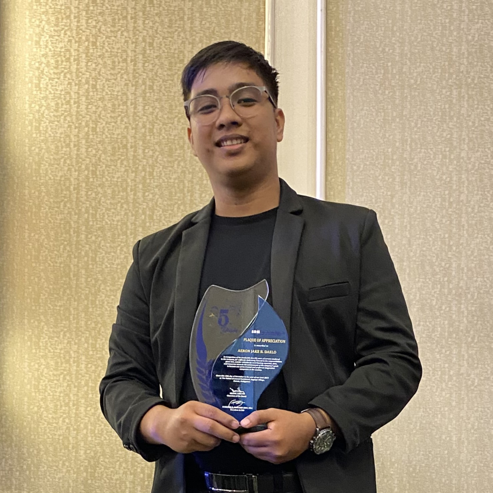

Welcome, It's me
Aeron Jake B. Daelo
Come see some of the projects I've been working on. Every project, no matter how small, helps my learning process. I'm always trying new things and getting better, so please let me know what you think!
